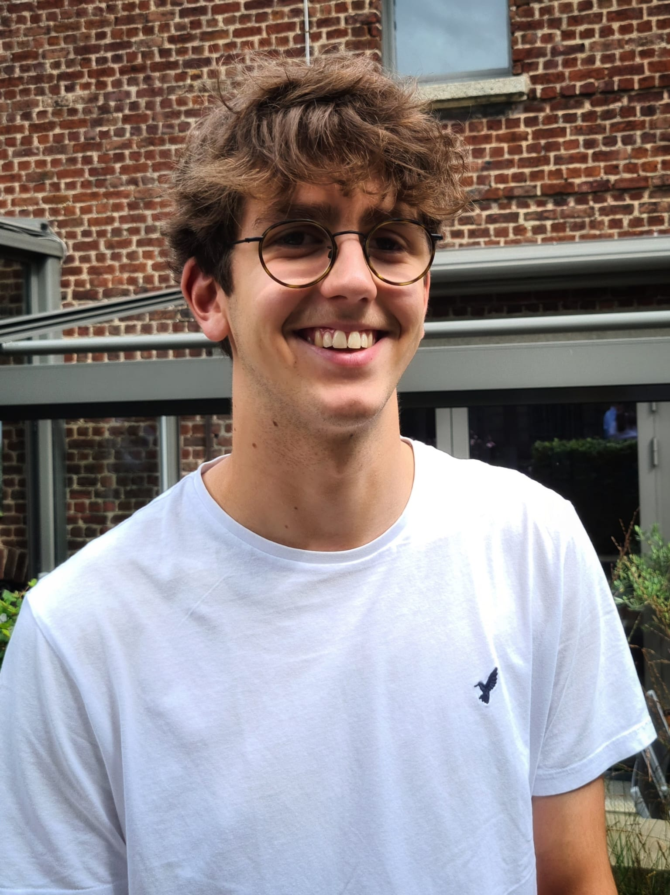

Infrastructure Engineer
21-jarige IT-student uit Roeselare. Gepassioneerd door netwerk- en systeembeheer, met hands-on ervaring via stage en studie. Altijd klaar voor een nieuwe uitdaging.

// 01 — vaardigheden
Hard Skills
Soft Skills
// 02 — ervaring
// 03 — studie
// 04 — buiten het werk
// 05 — contact
Op zoek naar een gemotiveerde IT-student voor een stage, job of samenwerking? Stuur gerust een berichtje — ik reageer snel.